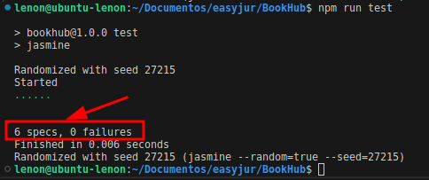

Utilizando Jasmine criei testes unitários para validar a function isValidISBN10:
function isValidISBN10(isbn) {
isbn = isbn.replace(/-/g, '');
if (isbn.length !== 10) {
return false;
}
let sum = 0;
for (let i = 0; 9 > i; i++) {
if (0 > isbn[i] || isbn[i] > 9) {
return false;
}
sum += (isbn[i] * (10 - i));
}
let checksum = isbn[9].toUpperCase();
sum += (checksum === 'X') ? 10 : parseInt(checksum);
return (sum % 11 === 0);
}
Mas primeiro precisei entender o que é o ISBN10 para poder criar os testes. Cheguei nas seguintes conclusões
baseados em pesquisas (https://pt.wikipedia.org/wiki/International_Standard_Book_Number) e tambem na propria
function:
- Precisa ter 10 digitos, sem contar os hífen. Exemplo válido: 0684843285
- Com ou sem hífen a function deve verificar a validade do codigo. Exemplo válido: 0-684-84328-5
- Pode acontecer de terminar com X. Exemplo válido: 0-8044-2957-X
- Se passar algum caracter invalido como 'ASD' deve dar erro. Exemplo: 0-ASD-84328-5
- Os ISBN-10 são gerados seguindo alguns calculos expecificos, então não é qualquer número que pode ser aceito.
Por exemplo 1234567890 não é válido.
Baseado nessas regras, criei os seguintes testes unitários que estão disponiveis na pasta
/spec/isValidISBN10.spec.js
import isValidISBN10 from "../js/isValidISBN10.js";
describe("isValidISBN10", () => {
it("should return true for a valid ISBN-10 without dashes", () => {
expect(isValidISBN10("0684843285")).toBe(true);
});
it("should return true for a valid ISBN-10 with dashes", () => {
expect(isValidISBN10("0-684-84328-5")).toBe(true);
});
it("should return true for a valid ISBN-10 ending with X", () => {
expect(isValidISBN10("0-8044-2957-X")).toBe(true);
});
it("should return false for an ISBN-10 with incorrect length", () => {
expect(isValidISBN10("0-684-84328")).toBe(false);
expect(isValidISBN10("0-684-84328-5123")).toBe(false);
});
it("should return false for an ISBN-10 with invalid characters", () => {
expect(isValidISBN10("0-ASD-84328-5")).toBe(false);
});
it("should return false for an invalid ISBN-10", () => {
expect(isValidISBN10("1234567890")).toBe(false);
});
});
Para executar os testes basta rodar o comando:
npm run test
